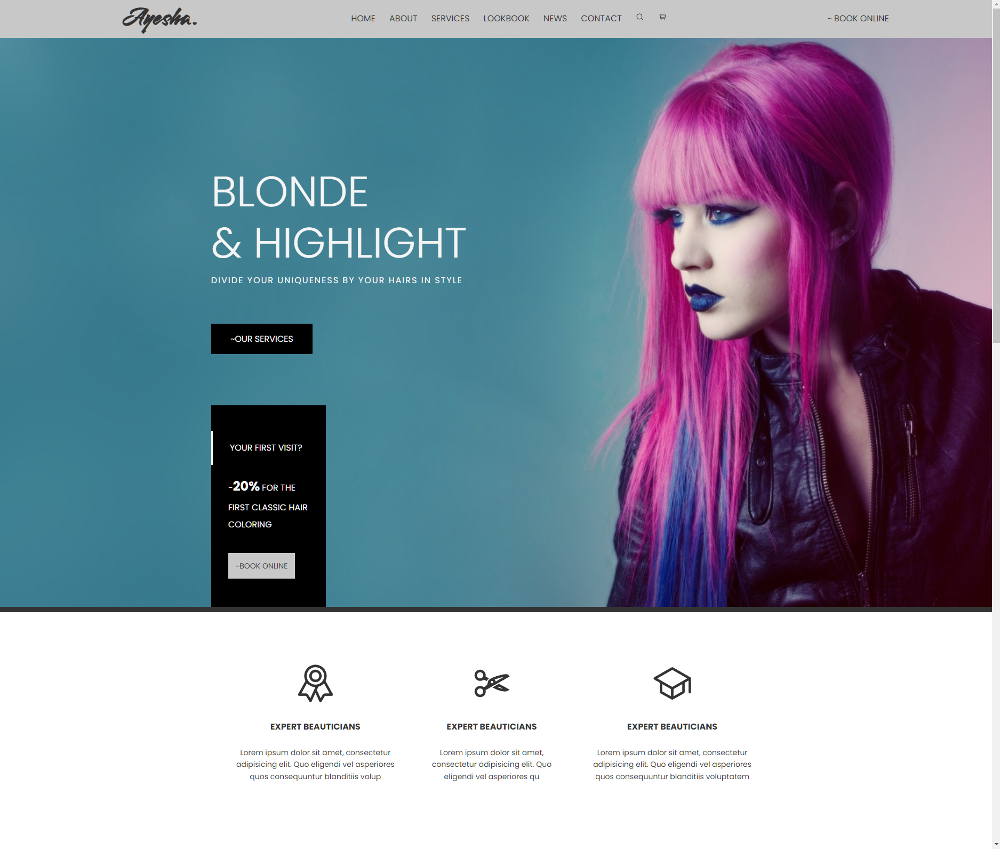

Aaron Butnik
AARON BUTNIK
ABOUT ME

I am a graduate from the University of Santa Barbara, California and have a Bachelor's Degree in Environmental Studies. I have always been interested in computers, but it wasn't until recently that I really wanted to persure a career in web development because I thought programming was all about math with no creativity involved.
However, I met a friend who is a front end web developer as well as a UX/UI designer, and showed me that there is lot's of creativity involved with programming. The websites he created were beautiful from aesthetic viewpoint, as well as from a functionality viewpoint. He demonstrated the ability to create something from literally a blank slate, just like an artist, which has inspired me to purse a career in web development.
TECHNOLOGIES
PROJECTS

CONTACT ME
Find more of my work on GitHub